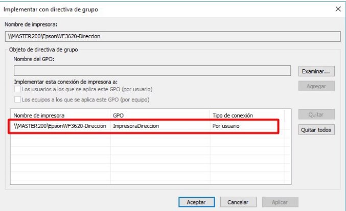
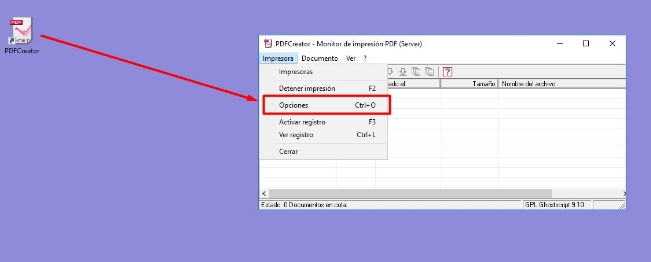

Practica14 ImpWinServ
Administración de los Servicios de Impresión

Administración de los Servicios de Impresión
Curso a distancia 19FP32CF011
Administración centralizada de redes con Windows Server 2019 Alberto Aparicio Vila
Índice
índice
Administración de la Impresión.
Planificar y configurar los trabajos de impresión de los usuarios. Actividades
Servicios de Impresión
Uno de los dispositivos hardware que aparecen en casi todas las redes empresariales, junto con los PCs y los elementos de interconexión, son las impresoras. En los siguientes apartados revisaremos cómo implantar, configurar y mantener los servicios de impresión de una manera centralizada.
Sin embargo antes de empezar, repasemos los términos que utilizaremos a lo largo de este capítulo y cuyo significado no es evidente:
- Impresora lógica: es la interfaz de usuario que se coloca entre el sistema operativo y el dispositivo de impresión.
- Dispositivo de impresión: es el dispositivo físico que lleva a cabo la impresión de los documentos.
- Controlador de impresión: es un conjunto de archivos que permiten al sistema convertir los trabajos de impresión al lenguaje específico del dispositivo de impresión.
- Cola de impresión: es un conjunto de dispositivos físicos de impresión gestionados por una misma impresora lógica.
Impresión en Red
El objetivo final del servicio de impresión es proporcionar la capacidad de impresión a los usuarios de la red. Existen diferentes maneras de compartir en red un dispositivo físico de impresión. La más común en entornos corporativos es la instalación de una impresora física que soporta el direccionamiento IP y puede ser conectada directamente a la LAN a través de un switch o un hub:

Esquema de red habitual
Esta topología es la idónea en entornos en los que se generan volúmenes de impresión que justifican la adquisición de una impresora de estas características, pero no lo suficientemente grandes para suponer un problema de congestión en el equipo que tienen instalado el servidor de impresión (Controlador de Dominio en este caso.).
En entornos donde se genera un número muy elevado de trabajos de impresión (por ejemplo una imprenta, una copistería, etc.) puede valer la pena conectar la impresora localmente a un equipo dedicado en exclusiva a estas labores y que ejercerá de servidor de impresión. Desde este servidor se compartirá la impresora en red, asignando los permisos planificados en la estructura corporativa.
Este tipo de conexión y compartición, también puede ser útil cuando se cuenta con impresoras que no disponen de la capacidad de conectarse directamente a la red y deben conectarse a un equipo para poder recibir los trabajos de impresión.
En este tema nos centraremos en el primer caso, ya que:
- Es el más habitual en empresas no dedicadas en exclusiva al negocio de la impresión.
- Existen en el mercado servidores de impresión propios de las compañías que desarrollan los dispositivos de impresión orientados al sector específico de imprenta y reprografía.
Instalación de los Servicios de Impresión
Como hemos visto en el punto anterior, la manera más habitual de conexión de impresoras en organizaciones de tamaño medio y grande consiste en conectar la impresora directamente a la red a través de un switch. Vamos a implantar esta estructura en nuestro dominio. Para ello lo primero que tenemos que hacer es instalar la función de 'Servicios de Impresión' :

Agregar el rol de Servicios de Impresión
En la siguiente figura podemos seleccionar qué servicios de impresión queremos instalar. Instalaremos únicamente el 'Servidor de Impresión', la segunda opción permite poner en marcha un servidor web para gestionar los trabajos de impresión. La tercera ('Servidor LPD') la instalaríamos en caso de tener una red heterogénea Windows-GNU/Linux, y la tercera permite la gestión de digitalización de documentos.

Servicios a instalar
Confirmamos e instalamos el Servicio de Impresión:

Instalar Servicio de Impresión

Instalación de Servicios de Impresión
Una vez instalado el Servidor de Impresión, ya podemos acceder al administrador de la impresión a través del Panel del Administrador --> Herramientas --> Administración de Impresión:

Administración de Impresión

Administración de Impresión
Agregando un Dispositivo de Impresión
Una vez que tenemos instalados los servicios de impresión en el controlador de dominio, agregaremos un dispositivo de impresión en red. Para ello, abrimos el Administrador de Impresión y añadimos una nueva impresora:

Agregar una impresora
Se abrirá el Asistente para la instalación de impresoras en red, y ahí podremos especificar el método de instalación. La primera de las opciones (Buscar impresoras en la red) nos mostrará un listado de los dispositivos físicos de impresión accesibles desde nuestro equipo. Como no hemos conectado ninguno, esta opción no nos sirve. La segunda de las opciones (Agregar una impresora TCP/IP o de servicios web en base a la dirección IP o nombre de host) nos permite configurar una impresora lógica que apuntará a la dirección IP que definiremos en el dispositivo físico de impresión. La tercera opción (Agregar una nueva impresora por medio de un puerto existe) nos permitiría configurar una impresora lógica que apuntaría a un puerto ya existente del controlador de dominio (LPT, USB, etc.) donde podríamos conectar el dispositivo físico de impresión. Finalmente la última opción (Crear un nuevo puerto y agregar una nueva impresora) nos permite definir un nuevo puerto local como interfaz entre una impresora lógica a configurar y el dispositivo físico.
Como queremos administrar un dispositivo físico de impresión que se conectará directamente a la red, seleccionaremos la segunda opción: 'Agregar una impresora TCP/IP o de servicios web en base a la dirección IP o nombre de host'.

Buscando impresoras de red

Buscando impresoras de red
Una vez encontrada la impresora, procedemos a realizar la instalación de la misma. Habrá que seleccionar los drivers, bien por defecto o bien si hemos de descargarlos de internet y realizar la instalación de los mismos. Al final la impresora queda instalada:

Instalación de Impresora

Instalación de Impresora
Podemos comprobar, realizando una impresión de prueba que nuestra impresora funciona:

Prueba de Impresión
Despliegue de los Dispositivos de Impresión
De la misma manera que en el tema 5 vimos cómo asociar carpetas compartidas específicas a los usuarios de una manera transparente a estos, ahora veremos cómo asociar los dispositivos de impresión a usuarios o grupos, sin que estos tengan que llevar a cabo ningún tipo de configuración, lo cual es un proceso molesto y peligroso.
Para poder realizar esta tarea, debemos asegurarnos de que la impresora está compartida en red, y que los usuarios que planifiquemos tienen acceso a la misma. Para ello, en el administrador de impresión, haremos clic con el botón secundario en el dispositivo de impresión que queremos configurar, y accederemos a las Propiedades. En la pestaña 'Compartir' corroboraremos que la compartición está habilitada, tal y como configuramos en la instalación de la impresora, y en la pestaña 'Seguridad' comprobaremos que los grupos o usuarios que definamos tienen permiso para imprimir:

Permisos a dispositivos de impresión
En principio no es aconsejable otorgar a los usuarios convencionales del dominio los permisos de administrar impresoras o administrar documentos. La administración de impresoras proporciona al usuario un control total sobre la impresora y sus controladores. La administración de documentos permite al usuario realizar tareas de control sobre los documentos y puede detener, reiniciar o cancelar las tareas de impresión:

Permisos de seguridad en Impresoras
Lo más habitual es que los dispositivos de impresión estén distribuidos en la empresa en diversos departamentos o plantas del edificio, y normalmente los usuarios suelen tener acceso únicamente a las impresoras asignadas a su grupo, por lo que eliminaremos el grupo Todos de los permisos, y añadiremos al grupo Pistonazo, ya que a priori, podrán imprimir documentos:

Asignar permisos de impresión
Como el despliegue de los dispositivos de impresión lo haremos mediante directivas de grupo, antes de empezar crearemos un GPO sobre todo el dominio que llamaremos (en este caso) ImpresoraPistonazo. En el filtrado de seguridad del GPO incluiremos únicamente al grupo Pistonazo.

Crear GPO para Impresora
y añadimos al grupo Pistonazo:

Agregamos a la GPO el grupo Pistonazo
A continuación, abriremos el Administrador de Impresión y seleccionamos la impresora que queremos desplegar. Hacemos clic con el botón derecho y seleccionamos la opción 'Implementar con directiva de grupo' :

Implementar con directiva de grupo
Se abrirá el cuadro de dialogo y haremos clic en 'Examinar...' para seleccionar a qué directiva queremos añadir la configuración de la impresión:

Implementar con directiva de grupo

Seleccionar la GPO

Añadir GPO aplicada por usuario

Aplicar la GPO
Si ahora iniciamos sesión con un usuario de Pistonazo, veremos que la Impresora se ha conectado y podemos imprimir en ella:

Impresora conectada por GPO
Si iniciáramos sesión con otro usuario que no fuera de Pistonazo, no conectaría la impresora:

Usuario sin permisos de conexión
Administración de la Impresión
Podemos administrar ciertos aspectos de los trabajos de impresión, desde el Administrador de Impresoras, accediendo a las Propiedades de la impresora que queremos configurar.
Controladores Adicionales
Para empezar, nos aseguraremos de que estén instalados los drivers de la impresora para las distintas arquitecturas de equipos presentes en la red. Para ello en la pestaña 'Compartir' haremos clic en el botón 'Controladores adicionales' .

Controladores adicionales
Nos aparecerá un cuadro donde podremos seleccionar la arquitectura de los controladores de la impresora:
- x64: arquitectura de 64 bits.
- x86: arquitectura de 32 bits

Controladores x86 y x64
Instalaremos aquellas versiones que necesitemos en función de los equipos de nuestra red y los equipos clientes se descargarán los drivers adecuados accediendo al recurso compartido print$ que se halla alojado en el servidor en la ruta C:\system32\spool\drivers , de una manera transparente al usuario.
Preferencias de Impresión
Podemos configurar las 'Preferencias de impresión' en la pestaña 'General':

Preferencias de Impresión
Ahí podemos definir aspectos como el formato de ahorro en papel imprimiendo en modo folleto, aunque posteriormente el usuario pueda modificar esta configuración antes de enviar el trabajo de impresión:

Preferencias de Impresión
Opciones avanzadas de Impresión
La pestaña 'Opciones Avanzadas' nos permite configurar aspectos relacionados con la gestión de los trabajos de impresión:

Opciones avanzadas de impresión
Aunque las opciones son bastante autoexplicativas, repasaremos las más interesantes desde el punto de vista de la administración de una red:
- Disponible desde...: Permite establecer unos periodos de utilización del dispositivo de impresión.
- Prioridad: Asigna un nivel de prioridad en los trabajos de impresión, siendo el 1 el valor que indica menor prioridad. Esta opción es especialmente útil cuando tenemos varias impresoras lógicas apuntando al mismo dispositivo físico y queremos que la prioridad de cada impresora lógica sea diferente.
- Controlador: nos permite modificar el controlador de la impresora.
- Imprimir usando la cola para que el programa termine más rápido: Al realizar la impresión de un documento largo, en primer lugar el equipo lo convierte al lenguaje de la impresora, y a continuación envía página por página de acuerdo a la velocidad del dispositivo de impresión. La colocación en cola de impresión de un documento permite enviar el documento en segundo plano para que el resto de aplicaciones puedan seguir trabajando con normalidad. Sin embargo, la opción 'Imprimir directamente en la impresora' requiere que el sistema espere hasta que la impresión haya terminado para seguir trabajando con la aplicación que envió el trabajo de impresión. Existen dos opciones en 'Imprimir usando la cola para que el programa termine más rápido': 1. Iniciar la impresión al entrar la última página en la cola: permite no empezar a imprimir hasta el momento en que todo el documento esté en la cola, lo que podría ser útil cuando los trabajos de impresión requieren la interacción del usuario. 1. Empezar a imprimir de inmediato: Los clientes tratan parcialmente el documento antes de enviarlo a la impresora lógica. En el momento en el que hay espacio en la cola remota del servidor, el documento es enviado y tratado completamente. Se coloca entonces en espera antes de ser dirigido hacia un dispositivo de impresión
 Imprimir primero los documentos de la cola de impresión: En este caso la prioridad ya no se basa únicamente en el grado de prioridad proporcionado explícitamente; el documento que haya entrado en la cola de impresión tendrá una prioridad superior frente al que acceda posteriormente (incluso si el nuevo documento dispone de un nivel de prioridad más alto).
Imprimir primero los documentos de la cola de impresión: En este caso la prioridad ya no se basa únicamente en el grado de prioridad proporcionado explícitamente; el documento que haya entrado en la cola de impresión tendrá una prioridad superior frente al que acceda posteriormente (incluso si el nuevo documento dispone de un nivel de prioridad más alto).
- Conservar los documentos después de su impresión: Esta opción permite mantener en el administrador de impresión los trabajos impresos. Si no se selecciona esta opción, el documento una vez impreso se elimina de la cola de impresión.
- Habilitar características de impresión avanzadas: Permite modificar aspectos como el número de páginas a imprimir por hoja, el orden de las mismas, etc.
Configuración de la Impresión
Supongamos que disponemos de una única impresora física en nuestra empresa, y queremos configurarla de manera diferente para cada departamento. Por ejemplo, podríamos querer asignar prioridades diferentes: el grupo Almacén podría tener una prioridad en la impresión inferior a la del grupo Dirección. Además también podríamos hacer una planificación en la que el grupo Almacén solo pudiera imprimir de 8.00 a 16.00, mientras que el grupo Dirección podría imprimir durante todo el día. Veamos como implantar esta política de administración paso a paso.
En primer lugar tenemos que crear dos impresoras lógicas que apunten al mismo dispositivo de impresión físico, una para la sección de Dirección y otra para la sección de Administración:

Permisos diferentes de Impresión
Es importante que ambas impresoras estén compartidas, y que los miembros de los respectivos grupos tengan permisos para imprimir:

Configuración de dos impresoras lógicas
Configuraremos las impresoras (lógicas) de Almacén y Dirección como hemos planificado al principio de este apartado:

Configuración de opciones avanzadas
A continuación creamos un GPO para cada grupo que nos permitirá desplegar la correspondiente impresora a los miembros de cada grupo:

Definición de las GPOs
En el siguiente paso implementamos la conexión de cada impresora mediante su correspondiente GPO:

Implementación de la GPO Almacén

Implementación de GPO a Almacén
Y hacemos el mismo proceso para Dirección:

Implementación de la GPO a Dirección
Para finalizar ejecutamos gpupdate /force en el controlador de dominio y ya tendremos implementadas las impresoras con sus respectivas restricciones para los grupos de Almacén y Dirección.
Destacar de nuevo que hemos creado dos impresoras lógicas que apuntan al mismo dispositivo físico con el fin de realizar una gestión de la impresión física diferenciada en función del usuario o grupo que envíe los trabajos a la impresora.
Comprobación de la configuración
Para comprobar la configuración anterior, vamos a iniciar sesión en un equipo cliente con el usuario usucont1 perteneciente al grupo Almacén, y vamos a enviar un trabajo de impresión fuera del horario en el que tiene permitido imprimir:

Impresora de usuario de Almacén
Vemos en la figura anterior que aparece automáticamente la nueva impresora EpsonWF3620-Almacen.
Si nos vamos al controlador de dominio y abrimos el asistente de impresión vemos que efectivamente el trabajo está en la cola, pero no se está imprimiendo por restricciones horarias:

Impresora con restricción horaria Ahora iniciaremos una sesión con el usuario usudir1 que es del grupo de Dirección:

Impresora sin restricción para grupo Dirección
Actividades
Actividad 1
En esta actividad instalaremos una impresora en el controlador de dominio y la compartiremos y administraremos en red, como hemos visto en los diferentes apartados de este tema.
La principal diferencia con lo visto hasta ahora consiste en que la impresora que 'conectaremos' al servidor será una impresora pdf, por lo que con el instalable se creará el puerto de impresora y se instalarán los drivers necesarios de una manera prácticamente trasparente para nosotros.
- En primer lugar instalaremos la impresora pdf.
- La descargaremos de aquí (es una versión antigua, pero funciona en modo servidor, las nuevas versiones no) y la instalaremos con las opciones por defecto pero en modo servidor.
- Compartiremos la impresora en red (desde el Administrador de Impresión) para que los usuarios de dominio tengan permiso de impresión.
- Crearemos una GPO en el dominio pero que solo aplicaremos al grupo (no a la UO) Ventas de nuestra organización de Empresa
- Configura la impresora pdf para que se despliegue automáticamente en todos los usuarios del grupo Ventas (utiliza la GPO que hemos creado en el punto anterior).
- Crea un documento de texto en un equipo cliente al que has accedido con un miembro del grupo Ventas.
- Desde el bloc de notas (notepad) imprime (en la impresora pdf que está albergada en el servidor y que debe aparecer automáticamente a los miembros de Ventas) el fichero que acabas de generar.
- Inicia sesión con un usuario que no pertenezca a Ventas y comprueba que no aparece la impresora pdf en las opciones de impresión.
Adjunta las capturas de pantalla describiendo el proceso, en especial las correspondientes a los puntos 4, 5, 7 y 8.
Instalación de la Impresora PDFCreator
Para realizar la instalación de la impresora PDFCreator, vamos a utilizar el instalador que se encuentra en el siguiente enlace. A continuación haré una breve guía de cómo realizar la instalación, ya que es una versión un poco más antigua que la hay ahora disponible, pero esta ofrece la posibilidad de hacer una instalación en modo servidor. También mostraré el objetivo final de la actividad sobre un usuario de ventas de la organización Pistonazo.
Iniciaremos el asistente de instalación sin descargar la nueva versión:

Instalación de PDFCreator
Activaremos la instalación modo experto:

Activar modo experto
Seleccionaremos la instalación modo servidor:

Instalación modo servidor

Impresora PDFCreator
La siguiente pantalla nos permite seleccionar los controladores para máquinas con arquitecturas en 32 bits, en nuestro caso no tenemos ninguna, pero si se diera el caso, podríamos imprimir también con los controladores de 32 bits.

Selección de controladores 32 bits
A continuación podemos seleccionar un Visor PDF que va con el programa de instalación, PDFArchitect... Si quisierais ver los PDFs generados podéis marcar la opción.

Componente adicionales
y procedemos a la instalación:

Instalación de PDFCreator
Como todos los programas free, siempre añaden algún programa adicional... seleccionaremos Saltar... para que no instale nada más:

No instalar programas adicionales
Una vez instalado, nos aparecerá un icono en el escritorio. Ahora lo que vamos a hacer es configurar las opciones de autoguardado de los documentos PDF, para que de manera automática guarde los documentos en los directorios de las carpetas particulares de los usuarios:

Configurar opciones
Y seleccionar autoguardado:

Configurar autoguardado
Activaremos la casilla de autoguardado y configuraremos el directorio donde queremos que se guarden los documentos, para el caso de la empresa Pistonazo, este directorio será "\192.168.100.1\Pistonazo_users$\
Tras configurar las opciones de las GPOs y las propiedades de la impresora creada, si iniciamos sesión con un usuario nos aparecerá la impresora PDFCreator:

Impresión en PDFCreator
Por último veremos cómo se ha generado el nuevo documento en el directorio PDF de la carpeta personal:

Impresión de documentos PDF
El objetivo es que se configure la impresora para nuestra organización y para el grupo de Ventas. Iniciéis sesión y comprobéis los resultados.
Obra publicada con Licencia Creative Commons Reconocimiento Compartir igual 4.0